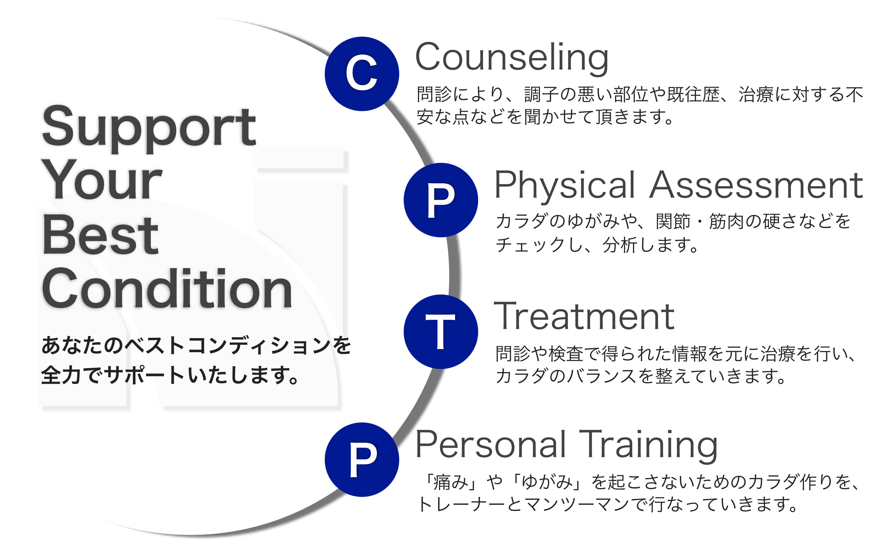

「ケガや痛みの治療だけではなく、よりアクティブなライフスタイルを築く手助けをしたい」
そんな思いから当院では、最新式の治療機器や手技での治療はもちろん、パーソナルトレーニングも行っています。
整形外科や整骨院で治療したけどなかなか良くならない、もしくはすぐに痛みが戻ってしまう。
そんな方々は身体のバランスが崩れていたり、自分の身体を支える筋力や柔軟性が足りない、
もしくは他の部位をかばって痛みが出ているなど、患部に原因がないケースがほとんどです。
のむら整骨院では、なぜそこに痛みが出ているのかの根本原因をしっかりと探り、
治療やトレーニングによって、痛みのないバランスの良い身体を作る手助けをさせて頂きます。

院長
NOMURA RYOTA
野村 亮太
経歴
NOMURA RYOTA
野村 亮太
柔道整復師
(公財)日本スポーツ協会 公認アスレティックトレーナー
経歴
伏見啓明整形外科 札幌骨粗鬆症クリニック勤務 8年
コナミスポーツクラブ勤務 5年
吉田学園 北海道スポーツ専門学校 非常勤講師 2年
札幌月寒高校 男子バスケットボール部トレーナー 6年
MEDICA(ドイツ) テーピングデモンストレーション